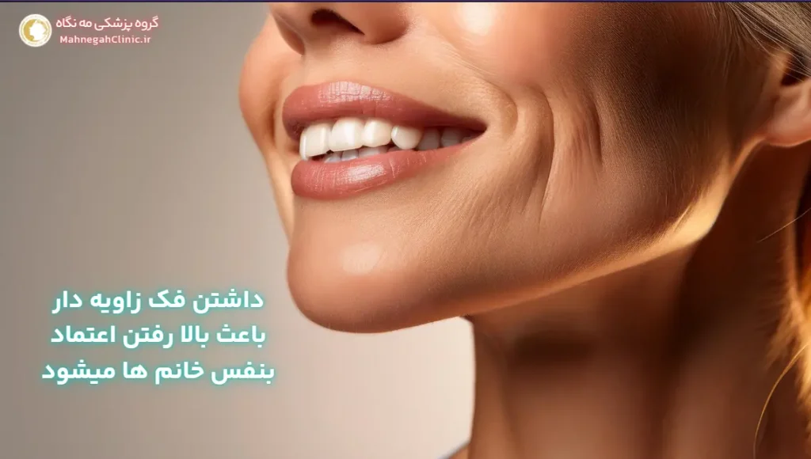
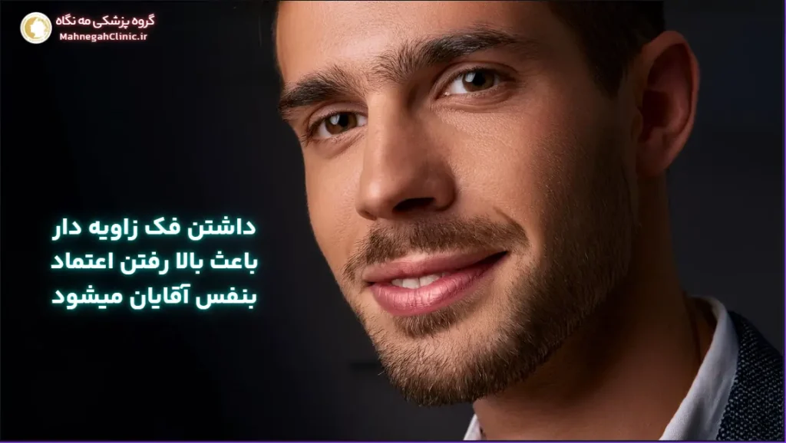
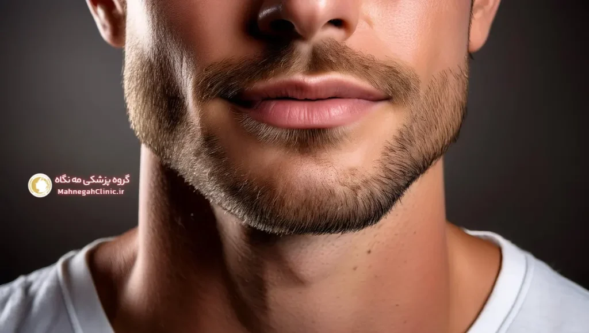

خانه / مجله / زاویه سازی فک
جراحی زیبایی زاویه سازی فک: راهنمای جامع

زاویه سازی فک چیست؟
جراحی زیبایی زاویه سازی فک، به مجموعه اقداماتی گفته میشود که برای بهبود و تغییر شکل خط فک و چانه انجام میگیرد.
این جراحی میتواند شامل تغییر در استخوان فک، برداشتن چربی اضافی و یا تزریق فیلر باشد. هدف اصلی از این عمل، ایجاد یک خط فک مشخص، متقارن و جذاب است که به زیبایی کلی صورت کمک میکند.
تعریف زاویه سازی فک
زاویه سازی فک به معنای ایجاد یک خط فک مشخص و برجسته است که با زوایای صورت هماهنگی داشته باشد. این جراحی میتواند به صورت دائمی یا موقت انجام شود و بسته به نیاز و شرایط هر فرد، روش مناسب انتخاب میشود.
چرا افراد به دنبال زاویه سازی فک هستند؟
دلایل مختلفی میتواند افراد را به سمت عمل زاویه سازی فک سوق دهد. برخی از این دلایل عبارتند از:
- عدم تقارن در فک و صورت: برخی افراد به طور طبیعی دارای عدم تقارن در فک و صورت خود هستند که میتواند باعث کاهش اعتماد به نفس آنها شود.
- فک کوچک یا عقب رفته: داشتن فک کوچک یا عقب رفته میتواند باعث شود صورت گردتر و کمتر جذاب به نظر برسد.
- غبغب: وجود غبغب میتواند باعث شود خط فک نامشخص و صورت سنگینتر به نظر برسد.
- تمایل به داشتن صورتی جذابتر: برخی افراد به دنبال بهبود ظاهر کلی صورت خود هستند و زاویه سازی فک را به عنوان یک راه برای رسیدن به این هدف انتخاب میکنند.
در کل، جراحی زیبایی زاویه سازی فک میتواند به بهبود ظاهر صورت و افزایش اعتماد به نفس افراد کمک کند، اما مهم است که قبل از تصمیمگیری، با یک جراح متخصص مشورت کرده و مزایا و معایب این عمل را به دقت بررسی کنید.
انواع روشهای زاویه سازی فک
امروزه، با پیشرفت تکنولوژی و علم پزشکی، روشهای متنوعی برای زاویه سازی صورت و فک وجود دارد. این روشها را میتوان به دو دسته کلی تقسیم کرد: روشهای جراحی و روشهای غیرجراحی. هر کدام از این روشها مزایا و معایب خاص خود را دارند و انتخاب بهترین روش به نیازها و شرایط هر فرد بستگی دارد.
زاویه سازی فک با جراحی
جراحی زاویه فک یک روش دائمی برای تغییر شکل فک و چانه است. در این روش، جراح با برشهایی در داخل دهان یا زیر چانه، به استخوان فک دسترسی پیدا میکند و آن را تغییر شکل میدهد.
این جراحی میتواند شامل کوچک کردن یا بزرگ کردن استخوان فک، تغییر زاویه فک و یا برداشتن چربی اضافی باشد. عمل زیبایی زاویه سازی فک و صورت معمولاً تحت بیهوشی عمومی انجام میشود و نیاز به بستری شدن در بیمارستان دارد.
زاویه سازی فک بدون جراحی
زاویه سازی فک بدون جراحی یا به اصطلاح عمل زاویه سازی صورت، یک روش موقت برای بهبود ظاهر فک و چانه است. در این روش، از مواد پرکننده مانند فیلر یا چربی برای افزایش حجم و تغییر شکل فک استفاده میشود.
این روشها معمولاً تحت بیحسی موضعی انجام میشوند و نیازی به بستری شدن ندارند. زاویه سازی فک با تزریق ژل یا چربی، یک روش کمتهاجمی است و دوره نقاهت کوتاهتری نسبت به جراحی دارد، اما نتایج آن دائمی نیست و نیاز به تکرار دارد.
در نهایت، انتخاب بین جراحی زاویه سازی فک و زاویه سازی فک بدون جراحی به عوامل مختلفی مانند هدف شما از انجام این عمل، شرایط پزشکی، بودجه و ترجیحات شخصی شما بستگی دارد. بهتر است قبل از تصمیمگیری، با یک جراح متخصص مشورت کنید و تمام جوانب را به دقت بررسی کنید.

مزایای جراحی زیبایی زاویه سازی فک
جراحی زیبایی زاویه سازی فک، علاوه بر بهبود ظاهر صورت، میتواند مزایای دیگری نیز برای فرد به همراه داشته باشد. در این بخش به برخی از مهمترین مزایای این جراحی اشاره میکنیم:
بهبود ظاهر صورت
یکی از بارزترین مزایای عمل زاویه سازی فک، بهبود قابل توجه ظاهر صورت است. این جراحی میتواند به موارد زیر کمک کند:
- ایجاد تقارن در صورت: اگر فک شما نامتقارن است، این جراحی میتواند به ایجاد تقارن و تعادل در صورت شما کمک کند.
- برجسته کردن خط فک: عمل زیبایی فک میتواند خط فک شما را برجستهتر و مشخصتر کند و به صورت شما ظاهری جذابتر و جوانتر ببخشد.
- کاهش غبغب: این جراحی میتواند به کاهش غبغب و ایجاد خط فک مشخصتر کمک کند.
- بهبود تناسب اجزای صورت: زاویه سازی صورت میتواند به بهبود تناسب اجزای صورت شما کمک کند و باعث شود چهره شما هماهنگتر و زیباتر به نظر برسد.
افزایش اعتماد به نفس
جراحی زاویه فک نه تنها ظاهر صورت شما را بهبود میبخشد، بلکه میتواند تأثیر مثبتی بر اعتماد به نفس شما نیز داشته باشد. وقتی از ظاهر خود راضی هستید، احساس بهتری نسبت به خودتان دارید و این میتواند در تمام جنبههای زندگی شما تأثیر بگذارد.
اعتماد به نفس بیشتر میتواند به شما کمک کند در روابط اجتماعی، کاری و شخصی خود موفقتر باشید.
به طور کلی، جراحی زیبایی زاویه سازی فک میتواند مزایای زیادی برای شما به همراه داشته باشد، اما مهم است که قبل از تصمیمگیری، با یک جراح متخصص مشورت کنید و تمام جوانب را به دقت بررسی کنید.
معایب و خطرات احتمالی جراحی زاویه فک
اگرچه جراحی زیبایی زاویه سازی فک میتواند مزایای بسیاری را به همراه داشته باشد، اما مانند هر عمل جراحی دیگری، با خطرات و عوارض جانبی احتمالی نیز همراه است. آگاهی از این خطرات میتواند به شما کمک کند تا تصمیم آگاهانهتری در مورد انجام این جراحی بگیرید.
عوارض جانبی کوتاه مدت
برخی از عوارض جانبی کوتاه مدتی که ممکن است پس از عمل زاویه سازی فک تجربه کنید عبارتند از:
- درد و تورم: پس از جراحی، ممکن است در ناحیه فک و صورت خود احساس درد و تورم کنید. این عوارض معمولاً با داروهای مسکن و کمپرس سرد قابل کنترل هستند و به تدریج بهبود مییابند.
- کبودی: ممکن است در اطراف فک و صورت خود کبودی مشاهده کنید. این کبودیها معمولاً طی چند هفته بهبود مییابند.
- بیحسی: ممکن است در ناحیه فک و لبهای خود احساس بیحسی کنید. این بیحسی معمولاً موقتی است و به تدریج برطرف میشود.
- مشکل در جویدن و صحبت کردن: در روزهای اول پس از جراحی، ممکن است در جویدن و صحبت کردن دچار مشکل شوید. این مشکلات معمولاً با بهبودی شما برطرف میشوند.
عوارض جانبی بلند مدت
در موارد نادر، ممکن است عوارض جانبی بلند مدتی نیز پس از عمل زاویه فک رخ دهد، از جمله:
- عفونت: اگرچه نادر است، اما ممکن است در محل جراحی عفونت رخ دهد. در صورت مشاهده علائم عفونت مانند تب، قرمزی، تورم یا ترشح از محل جراحی، فوراً به پزشک خود مراجعه کنید.
- آسیب به عصب: در موارد بسیار نادر، ممکن است در حین جراحی به عصبهای صورت آسیب وارد شود. این آسیب میتواند باعث بیحسی دائمی یا ضعف در عضلات صورت شود.
- عدم تقارن: اگرچه هدف از جراحی زاویه سازی فک ایجاد تقارن در صورت است، اما در برخی موارد ممکن است نتیجه جراحی کاملاً متقارن نباشد.
- اسکار: ممکن است در محل برشهای جراحی اسکار باقی بماند. با این حال، جراحان معمولاً برشها را در داخل دهان یا در چینهای طبیعی پوست ایجاد میکنند تا اسکارها کمتر قابل مشاهده باشند.
مهم است که قبل از تصمیمگیری در مورد جراحی زیبایی زاویه سازی فک، با یک جراح متخصص مشورت کنید و تمام خطرات و عوارض جانبی احتمالی را به دقت بررسی کنید. جراح شما میتواند به شما کمک کند تا بهترین تصمیم را برای خود بگیرید و انتظارات واقعبینانهای از نتیجه جراحی داشته باشید.

هزینه جراحی زاویه سازی فک
هزینه جراحی زاویه سازی فک یکی از مهمترین عواملی است که افراد در تصمیمگیری برای انجام این عمل در نظر میگیرند. هزینه این جراحی میتواند بسته به عوامل مختلفی متغیر باشد و بهتر است قبل از هر تصمیمی، با یک جراح متخصص مشورت کرده و اطلاعات لازم را کسب کنید.
عوامل موثر بر هزینه
- نوع روش جراحی: هزینه جراحی فک بسته به نوع روش جراحی انتخابی میتواند متفاوت باشد. به عنوان مثال، هزینه زاویه سازی صورت دائمی با جراحی، معمولاً بیشتر از هزینه زاویه سازی صورت با روشهای غیرجراحی مانند تزریق فیلر است.
- تجربه و تخصص جراح: هزینه جراحی میتواند بسته به تجربه و تخصص جراح نیز متغیر باشد. جراحان با تجربه و مهارت بالا ممکن است هزینه بیشتری را دریافت کنند.
- محل انجام جراحی: هزینه جراحی در شهرهای بزرگ و کلینیکهای مجهز ممکن است بیشتر از شهرهای کوچک و کلینیکهای معمولی باشد.
- هزینههای جانبی: علاوه بر هزینه خود جراحی، ممکن است هزینههای دیگری نیز وجود داشته باشد، مانند هزینه آزمایشات قبل از جراحی، هزینه بیهوشی، هزینه داروها و هزینههای مراقبتهای پس از جراحی.
مقایسه هزینه روشهای مختلف
- جراحی زاویه فک: هزینه عمل زاویه فک معمولاً بیشتر از سایر روشها است، زیرا این یک جراحی تهاجمی است و نیاز به بیهوشی عمومی و بستری شدن در بیمارستان دارد.
- تزریق فیلر: هزینه زاویه سازی فک با تزریق ژل یا فیلر معمولاً کمتر از جراحی است، زیرا این یک روش غیرجراحی است و تحت بیحسی موضعی انجام میشود.
- تزریق چربی: هزینه زاویه سازی فک با تزریق چربی نیز معمولاً کمتر از جراحی است، اما ممکن است نیاز به برداشت چربی از سایر نقاط بدن داشته باشد که میتواند هزینه را افزایش دهد.
- سایر روشهای غیرجراحی: هزینه سایر روشهای غیرجراحی مانند بوتاکس یا لیفت با نخ نیز معمولاً کمتر از جراحی است، اما نتایج آنها موقتی است و نیاز به تکرار دارد.
در نهایت، مهم است که قبل از تصمیمگیری در مورد جراحی زیبایی زاویه سازی فک، با یک جراح متخصص مشورت کنید و تمام جوانب را به دقت بررسی کنید. جراح شما میتواند هزینه دقیق جراحی را بر اساس نیازها و شرایط شما تخمین بزند و به شما کمک کند تا بهترین تصمیم را برای خود بگیرید.
آمادگی برای جراحی زاویه سازی فک
تصمیم به انجام جراحی زیبایی زاویه سازی فک یک تصمیم مهم است و نیاز به آمادگیهای لازم دارد. در این بخش، به برخی از مهمترین اقداماتی که باید قبل از جراحی انجام دهید، اشاره میکنیم.
مشاوره با پزشک
اولین و مهمترین قدم، مشاوره با یک جراح متخصص و مجرب در زمینه جراحی زاویه فک است. در طول مشاوره، جراح شما:
- سابقه پزشکی شما را بررسی میکند: جراح شما در مورد سابقه پزشکی شما، از جمله بیماریهای زمینهای، داروهای مصرفی، آلرژیها و جراحیهای قبلی شما سوالاتی خواهد پرسید.
- اهداف و انتظارات شما را بررسی میکند: جراح شما در مورد اهداف شما از انجام این جراحی و انتظارات شما از نتیجه جراحی صحبت خواهد کرد.
- معاینه فیزیکی انجام میدهد: جراح شما صورت و فک شما را معاینه خواهد کرد و ممکن است از شما عکسها و رادیوگرافیهایی بگیرد.
- روشهای جراحی مناسب را توضیح میدهد: جراح شما در مورد روشهای مختلف جراحی زاویه سازی فک و مزایا و معایب هر کدام توضیح خواهد داد و به شما کمک میکند تا بهترین روش را برای خود انتخاب کنید.
- در مورد خطرات و عوارض جانبی احتمالی صحبت میکند: جراح شما در مورد خطرات و عوارض جانبی احتمالی جراحی با شما صحبت خواهد کرد و به شما کمک میکند تا تصمیم آگاهانهای بگیرید.
آزمایشات و اقدامات قبل از جراحی
پس از مشاوره با جراح، ممکن است نیاز به انجام برخی آزمایشات و اقدامات قبل از جراحی داشته باشید، از جمله:
- آزمایش خون: این آزمایشات برای بررسی سلامت عمومی شما و اطمینان از آمادگی شما برای جراحی انجام میشوند.
- رادیوگرافی: ممکن است نیاز به گرفتن رادیوگرافی از فک و صورت خود داشته باشید تا جراح شما بتواند ساختار استخوانی شما را به دقت بررسی کند.
- قطع مصرف برخی داروها: ممکن است نیاز باشد مصرف برخی داروها مانند آسپرین یا داروهای ضد التهابی را قبل از جراحی قطع کنید، زیرا این داروها میتوانند خطر خونریزی را افزایش دهند.
- ترک سیگار: اگر سیگار میکشید، باید حداقل دو هفته قبل از جراحی سیگار را ترک کنید، زیرا سیگار میتواند روند بهبودی را کند کند و خطر عوارض را افزایش دهد.
- رعایت رژیم غذایی خاص: ممکن است جراح شما به شما توصیه کند که قبل از جراحی رژیم غذایی خاصی را رعایت کنید.
با پیروی از توصیههای جراح خود و انجام آمادگیهای لازم، میتوانید به یک جراحی موفق و بهبودی سریعتر دست یابید.

مراقبتهای پس از جراحی زاویه سازی فک
دوران نقاهت پس از جراحی زاویه سازی فک، مرحلهای حیاتی برای بهبودی کامل و دستیابی به نتایج مطلوب است. رعایت دقیق دستورالعملهای پزشک و مراقبتهای صحیح در این دوران، میتواند به کاهش عوارض جانبی و تسریع روند بهبودی کمک کند.
دوران نقاهت
- استراحت کافی: در روزهای اول پس از جراحی، استراحت کافی بسیار مهم است. سعی کنید تا حد امکان در رختخواب بمانید و از فعالیتهای شدید خودداری کنید.
- استفاده از کمپرس سرد: در چند روز اول پس از جراحی، میتوانید از کمپرس سرد برای کاهش تورم و درد استفاده کنید. کمپرس سرد را به مدت 15 تا 20 دقیقه روی ناحیه جراحی قرار دهید و سپس 15 تا 20 دقیقه استراحت کنید.
- رعایت رژیم غذایی: در ابتدا، ممکن است نیاز باشد از غذاهای نرم و مایعات استفاده کنید. به تدریج و با بهبودی، میتوانید به رژیم غذایی عادی خود بازگردید.
- مصرف داروها: پزشک شما ممکن است داروهایی برای کنترل درد، کاهش تورم و جلوگیری از عفونت تجویز کند. این داروها را طبق دستور پزشک مصرف کنید.
- مراجعه به پزشک: برای پیگیری روند بهبودی و اطمینان از عدم بروز عوارض، به طور منظم به پزشک خود مراجعه کنید.
نکات مهم برای بهبودی سریعتر
- رعایت بهداشت دهان و دندان: بهداشت دهان و دندان را به دقت رعایت کنید و دندانهای خود را به آرامی مسواک بزنید.
- پرهیز از سیگار و الکل: سیگار و الکل میتوانند روند بهبودی را کند کنند و خطر عوارض را افزایش دهند.
- پرهیز از فعالیتهای شدید: از فعالیتهای شدید و ورزشهای سنگین تا زمانی که پزشک اجازه نداده است، خودداری کنید.
- استفاده از گن فشاری: ممکن است پزشک شما استفاده از گن فشاری را برای کاهش تورم و حمایت از فک توصیه کند.
- خوابیدن با سر بالا: در چند روز اول پس از جراحی، سعی کنید با سر بالا بخوابید تا تورم کاهش یابد.
با رعایت این نکات و پیروی از دستورالعملهای پزشک، میتوانید دوران نقاهت را به راحتی پشت سر بگذارید و از نتایج جراحی زیبایی زاویه سازی فک خود لذت ببرید.
انتخاب بهترین جراح برای زاویه سازی فک
انتخاب بهترین جراح برای عمل زیبایی زاویه سازی فک، یکی از مهمترین تصمیماتی است که باید قبل از انجام این جراحی بگیرید. یک جراح متخصص و مجرب میتواند به شما کمک کند تا به نتایج مطلوب و طبیعی دست یابید و خطر عوارض جانبی را به حداقل برسانید. در این بخش، به برخی از معیارهای مهم در انتخاب جراح مناسب اشاره میکنیم.
معیارهای انتخاب جراح
- تخصص و تجربه: اطمینان حاصل کنید که جراح شما تخصص و تجربه کافی در زمینه جراحی زاویه فک دارد. میتوانید از جراح خود در مورد تعداد جراحیهای مشابهی که انجام داده است و نتایج آنها سوال کنید.
- گواهینامهها و مدارک: بررسی کنید که جراح شما دارای گواهینامهها و مدارک لازم برای انجام این جراحی است.
- نظرات بیماران قبلی: میتوانید نظرات بیماران قبلی جراح را در وبسایتها و شبکههای اجتماعی بخوانید یا از دوستان و آشنایان خود در مورد تجربیاتشان با جراح سوال کنید.
- ارتباط و تعامل: اطمینان حاصل کنید که با جراح خود احساس راحتی میکنید و میتوانید به راحتی با او ارتباط برقرار کنید. جراح شما باید به سوالات شما پاسخ دهد و نگرانیهای شما را برطرف کند.
- استفاده از تکنولوژیهای جدید: جراحانی که از تکنولوژیهای جدید و پیشرفته در جراحی استفاده میکنند، ممکن است نتایج بهتری را ارائه دهند.
- هزینه: هزینه جراحی نیز یکی از عوامل مهم در انتخاب جراح است، اما نباید تنها معیار شما باشد. کیفیت و ایمنی جراحی باید در اولویت قرار گیرد.
اهمیت تجربه و تخصص جراح
تجربه و تخصص جراح در جراحی زیبایی زاویه سازی فک بسیار مهم است. یک جراح با تجربه میتواند جراحی را با دقت و مهارت بیشتری انجام دهد و خطر عوارض جانبی را کاهش دهد. همچنین، یک جراح متخصص میتواند بهترین روش جراحی را برای شما انتخاب کند و به شما کمک کند تا به نتایج طبیعی و زیبا دست یابید.
در نهایت، انتخاب بهترین جراح برای عمل زاویه سازی فک یک تصمیم شخصی است و باید بر اساس نیازها و شرایط شما گرفته شود. با تحقیق و بررسی دقیق، میتوانید جراحی موفقی داشته باشید و از نتایج آن برای سالها لذت ببرید.

پرسشهای متداول درباره جراحی زیبایی زاویه سازی فک
در طول جراحی، به دلیل استفاده از بیهوشی، دردی احساس نخواهید کرد؛ اما پس از جراحی، ممکن است کمی درد و ناراحتی وجود داشته باشد که با مصرف داروهای مسکن قابل کنترل است.
دوره نقاهت معمولاً بین یک تا دو هفته است، اما ممکن است بسته به نوع جراحی و شرایط فردی متفاوت باشد.
نتایج جراحی زاویه سازی فک معمولاً دائمی هستند، اما در برخی موارد ممکن است نیاز به جراحیهای تکمیلی باشد.
خیر، جراحی زاویه سازی فک برای افرادی مناسب است که از سلامت عمومی خوبی برخوردارند و انتظارات واقعبینانهای از نتیجه جراحی دارند.
برای انتخاب بهترین جراح، میتوانید با چند جراح متخصص مشورت کنید، نمونه کارهای آنها را ببینید و نظرات بیماران قبلی را بررسی کنید.